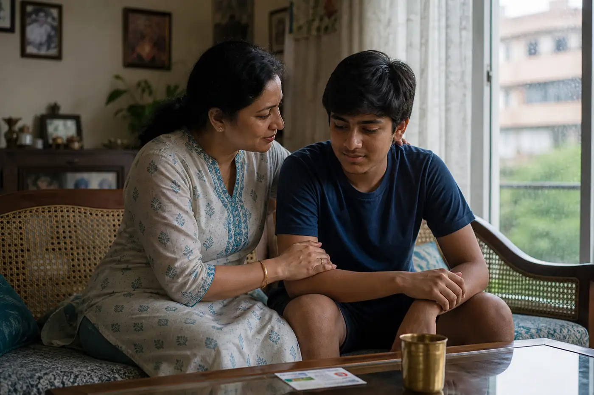

K
Canopy Kin
₹5L / ₹10L / ₹25L / ₹50L / ₹1Cr
Grove
Specimens · not Gold / Silver / Platinum
Each chapter names who it is for, what waits, what is out, and a from-price plus GST at 18%. Cashless is a root-list fact, not a slogan. Kin, Solo, Crest, Elder, then Bloom, Pulse, Forge, Guild. Buy and quote CTAs on this page open the 404 specimen vault in this demo.
₹5L / ₹10L / ₹25L / ₹50L / ₹1Cr
Grove
The household grove
For a couple with children, or parents under 65 sitting on the same ring. One SI is shared. A dengue week in Pune that touches two branches still has restoration for an unrelated later admission.
A single branch
For a person who may change cities or insurers. No-claim bonus adds 10% of SI each claim-free year, stops at 50%. Portability does not reset a wait already served elsewhere if papers arrive 45 days before expiry.
NCB 50% max
Portable
₹25L / ₹50L / ₹1Cr super top-up
Top-up
A second storey of shade
When an ICU bill crosses the base SI — Hyderabad, ₹22L on a ₹10L Kin — Crest pays after the deductible. It follows the base policy’s waiting periods. Selling Crest alone as “cheap 50L cover” is a line we refuse.
Entry 61–80
Co-pay 10% on this specimen for listed non-network reimbursement; 0% on cashless roots. Two-year PED wait is not a rumour — it is copper-stamped. Hypertension and diabetes declared at issue will not be used as a surprise decline after year three if the wait is served.

Rider pack · not a floater
Attach only to Kin. This is not a household canopy and not eight mini-policies. The wait is twenty-four months from rider issue — we will not let an ad say “from day one.”

Newborn covered 90 days if delivery is in a listed labour room. Ectopic and miscarriage after the wait are in. Fertility treatment is out. Bloom does not share SI with Kin — it is a rider pack with a printed sub-limit.

Wallet
₹25,000 OPD + diagnostics per year. Empaneled labs. 15-day wait on listed tests. This will not settle a ward bill. Dental reimbursement on Pulse is listed procedures only — Meera’s declined dental claim was outside the list, and the letter said so.
from ₹3,240/year + GST
Get Pulse
Lump sum
Fifteen listed critical illnesses. Pays SI as lump sum on first diagnosis meeting the definition — cancer (specified), first heart attack, stroke, major organ transplant, and eleven others on the specimen. Survival period 30 days. This is not a replacement for Kin hospitalisation.
from ₹7,980/year + GST · ₹25L band
Get ForgeSeven lives and up
SME and group. A census, a GST invoice to the firm, and e-cards to each branch. Custom waits can be shorter than retail if the file is clean — in writing, never as a slogan. Fewer than seven lives is still Kin.

A Surat mill with 42 weavers got a dedicated rain officer. Census first. Then the GST invoice to the firm. Then e-cards to each branch. We will not sell retail Kin as “group” because the advisor wants a volume slide.
01 · Census
Age, city, and declared PED on a sheet the actuary can read. A headcount is not a census.
02 · Rain officer
Printed on the group certificate. Cashless still sits on the 14,800-root list — not a blank cheque.
03 · E-cards
GST invoice to the firm. Cards to the people. A shared PDF in a WhatsApp group is not an e-card.
04 · Quote
No public from-price. If the census is dirty, we decline. A cheap slide is not a Guild canopy.
Anatomy of a policy page
Open a Kin 10L specimen and you should find these labels without a hunt. Sub-limits — ambulance, cataract, AYUSH — sit in a table, not a paragraph of adjectives.
The ring
The rupee figure the household stands under. Floater on Kin. Individual on Solo and Elder.
After a claim
Refill for a later, unrelated admission. Not the same dengue, not the same week.
Solo’s bonus
No-claim bonus, capped at 50%. Kin uses restoration instead. Crest follows the base.
Your share
0% on cashless roots for this Kin band. Elder prints 10% on some reimbursement.
The ward
A rupee cap if any — never a surprise 1% clause. This public Kin 10L has none.
On the invoice
Extra on premium from the day of issue. ₹18,420 becomes ₹21,735.60 on the ledger.
Specimen
Public Kin 10L band · not a Gold / Silver / Platinum slide
Honest cells
Four base-shaped canopies. Crest is the exception: a super top-up, not a first ring. Bloom, Pulse and Forge are packs. Guild starts at seven lives.
Household grove
from ₹18,420/year + GST · 10L, 2A+2C, Mumbai
A single branch
from ₹9,860/year + GST · ₹15L, age 34, Mumbai
Second storey
from ₹4,190/year + GST · ₹50L / ₹10L deductible
Entry 61–80
from ₹32,400/year + GST · ₹10L, age 67, Chennai
Cover FAQ
If the clause you need is not here, write cover@stacklycanopy.com. A mood is not a specimen. These answers match the public bands on this page.
You may sit Crest on another insurer’s base if the deductible actually exists and the waits already ran. You may not use Crest as the only canopy. Selling “cheap 50L cover” without a base is a line we refuse.
No. Kin restoration is 100% once per year for a subsequent, unrelated hospitalisation. The same admission, the same dengue week, the same ICU — that is still the original SI. Read the chair on the specimen.
No. Pulse is a ₹25,000 OPD and diagnostics wallet. It will not settle a ward bill. Buy Kin or Solo for hospitalisation. Meera’s declined dental claim sat outside Pulse’s listed procedures — the letter named the list.
Forge pays a lump sum on fifteen listed diagnoses after a 30-day survival period. It does not pay the hospital. Keep a base canopy. A critical-illness cheque is not a Kin ring.
This public band has no 1% cap. Lower rings may. If a cap exists it is a rupee figure on the certificate — never a percentage buried in a brochure. Ask for the specimen before you pay GST.
18% on health premium in this demo, from the day of issue. Kin 10L listed at ₹18,420 becomes ₹21,735.60 on the ledger. The invoice is the document finance will ask for — not optional poetry.
Quote in a business day
Quotes in this demo go to register. Specimens open the 404 vault. Guild still writes the desk.